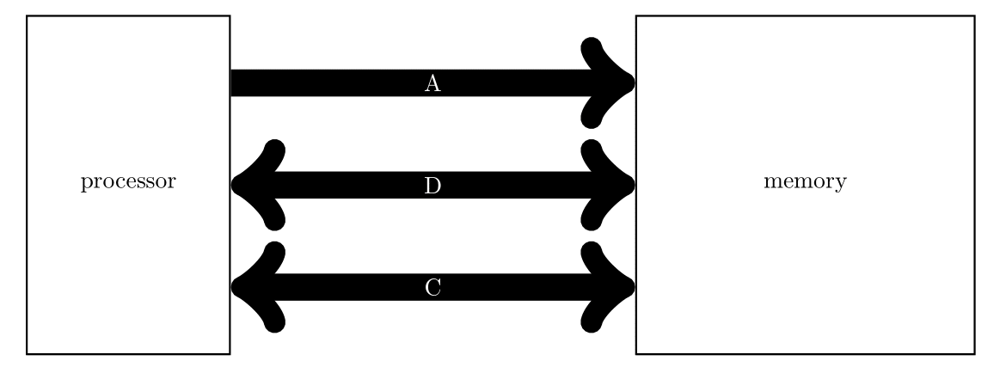

כרמי מרימוביץ
אתר אישי
המעבד והזכרון הראשי
המעבד נמצא בלולאה אינסופית של ביצוע פקודות מכונה. פקודות מכונה יכולות להיות אריתמטיות, לוגיות ובקרה.
פקודות המכונה נמצאות בזיכרון הראשי (זיכרון העבודה). הזיכרון הראשי הוא הזיכרון החיצוני למעבד היחיד ישירות אליו המעבד יכול לגשת.

דיסקים, לסוגיהם השונים, טייפים כו', הם זכרון מישני. גישה לזיכרון מישני דורשת תוכנה משמעותית. העובדה שיש לנו זיכרון ראשי ויזכרון מישני אינה יתרון מיוחד. להיפך. אנו נאלצים לחלק את הזכרון (כפי שנראה בהמשך) בצורה הזו כיון שאיננו יודעים לייצר זיכרון מהיר, גדול, זול ולא נדיף.
כרגע, כמוד עבודה, ניתן להתייחס אל היזכרון הראשי כאל מערך חד-ממדי אליו יש למעבד גישה. כאשר נדבר על כתובת של תא בזכרון, הכוונה היא לאינדקס במערך זה.
בעיקרון, הזיכרון הראשי נדיף (כלומר ללא הספק התוכן נמחק). מה שיוצר בעיה למחשב כי עם ההפעלה המעבד ינסה לשלוף פקודה מהזכרון הראשי לביצוע, ומה שיש בזכרון הראשי זה זבל. לכן תמיד, ובכל מחשב, יש זכרון לא-נדיף שמכיל את הפקודות הראשונות אותן יבצע המעבד. הכתובת המדוייקת היא תלויית מעבד שכן כל יצרן קובע כתובת ראשוני לריצה לפי (אי-)שיקול דעתו הבלעדי.
בכל המעבדים יש אוגר המכיל את כתובת הפקודה שיש לבצע. ברוב המעבדים שם האוגר הוא PC (Program Counter). יש יצרנים שבחרו בשם המרגש IP (Instruction Pointer).
המעבדים הראשונים שפותחו היו פשוטים למדי. במשך הזמן מספר פקודות המכונה והממורכבות שלהן הלכו וגדלו. הדבר גרר זמן תכנון ארוך ועלות יקרה.
באמצע שנות השמונים של המאה ה-20 החלו להופיע שנקטו בגישה שונה. מספר קטן של פקודות וכל פקודה יחסית פשוטה.
שני סוגי התכנון קיבלו את השמות הבאים:
-
CISC - Complex Instruction Set Computer
-
RISC - Reduced Instruction Set Computer